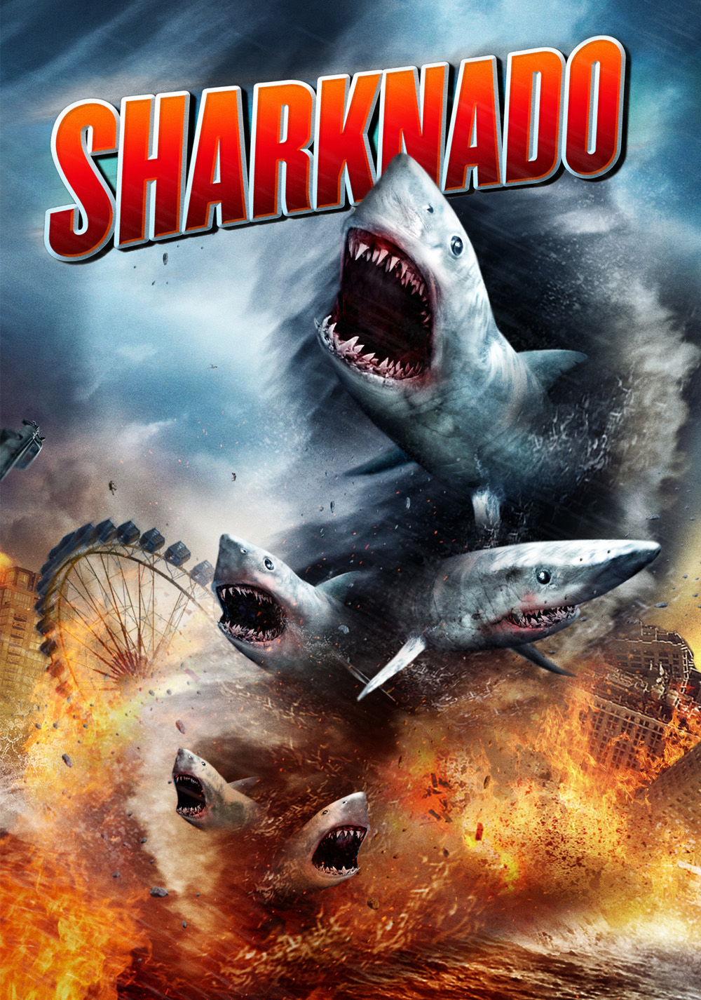

After a year at IAE Lille, i got bored sleeping and came to wake my brain up at Le Wagon (but it doesn't work, my brain is actually in cerebral death)
Welcome to PoudlardMy Favorites Movies
Inception - 2010Inception, ou Origine au Québec et au Nouveau-Brunswick, est un thriller de science-fiction américano-britannique écrit, réalisé et produit par Christopher Nolan, et sorti en 2010. |
|
 |
Mars Attacks - 1996Mars Attacks! ou Mars attaque ! au Québec est un film américain réalisé par Tim Burton, sorti le 12 décembre 1996 aux États-Unis. Le film se base sur le jeu de cartes à collectionner de 1962. |
|  |
Sharknado - 2013Sharknado est un téléfilm américain réalisé par Anthony C. Ferrante et diffusé le 11 juillet 2013 sur la chaîne Syfy. |